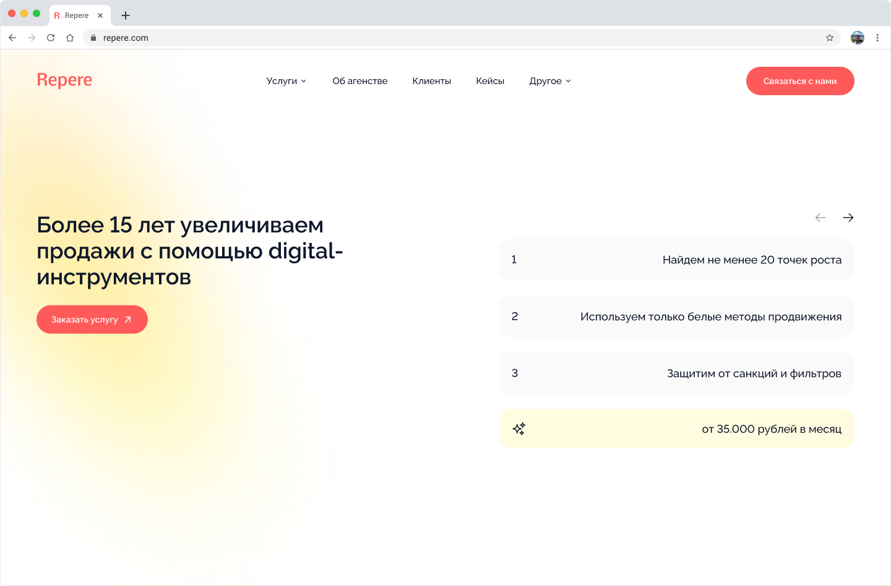
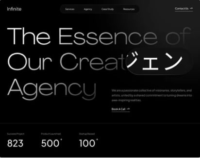
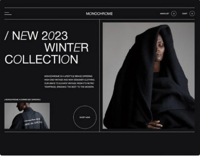

Website development for interior design studio.
Website development for marketing agency.

Website development for a creative agency for design and promotion.

Website development for a clothing brand.

Website development for video maker shooting and editing agency.

Website development for design studio.